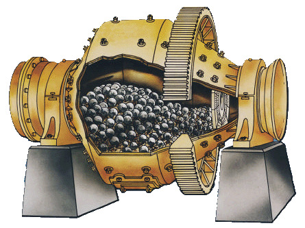
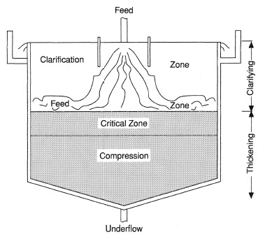
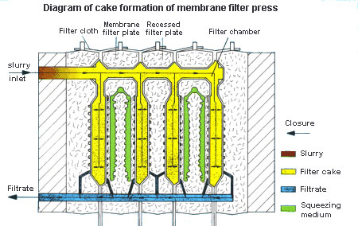
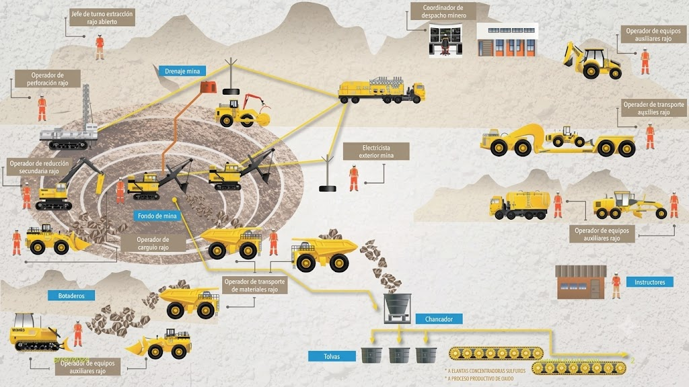

Discover how raw ore is transformed into valuable mineral concentrates through modern mineral processing operations.

Large rocks extracted from the mine are reduced in size using jaw crushers, gyratory crushers and cone crushers.

SAG mills and ball mills grind the ore into fine particles, allowing valuable minerals to be liberated.

Hydrocyclones classify particles according to size, ensuring efficient processing.

Valuable minerals are separated from waste rock using reagents and air bubbles.

Water is recovered and solids are concentrated before filtration.

Additional moisture is removed from the concentrate, producing a transportable product.
Mine → Crushing → Grinding → Classification → Flotation → Thickening → Filtration → Final Concentrate

This diagram illustrates the complete route followed by ore, from extraction at the mine through the concentration plant, where valuable minerals are separated and upgraded into commercial concentrates.